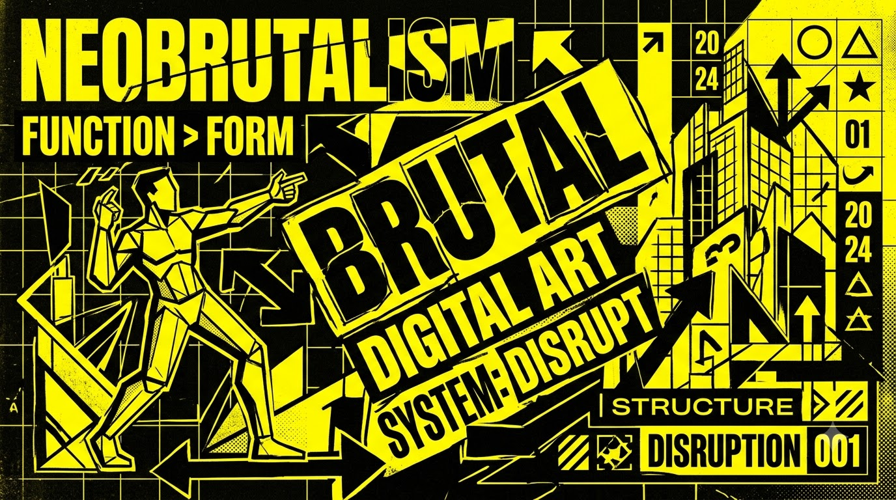
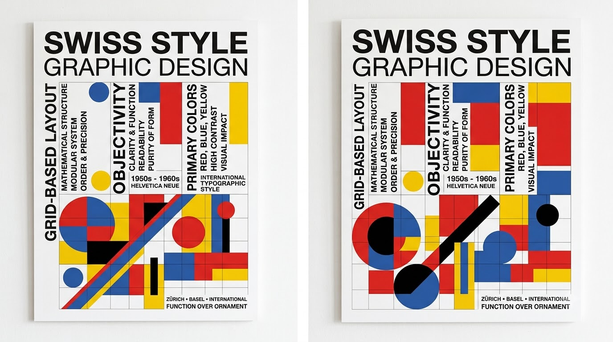
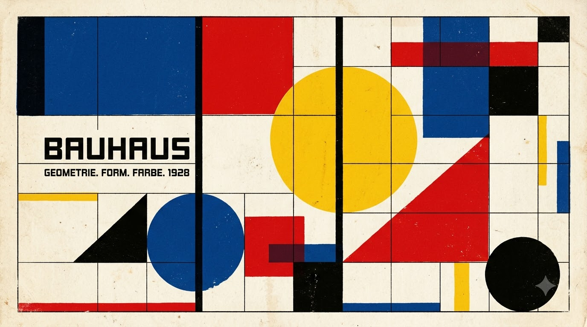
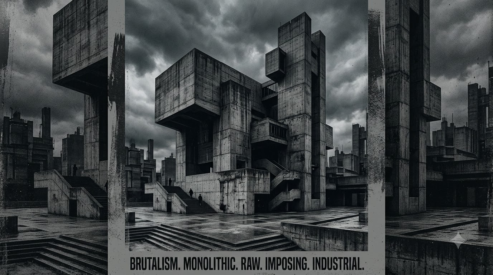
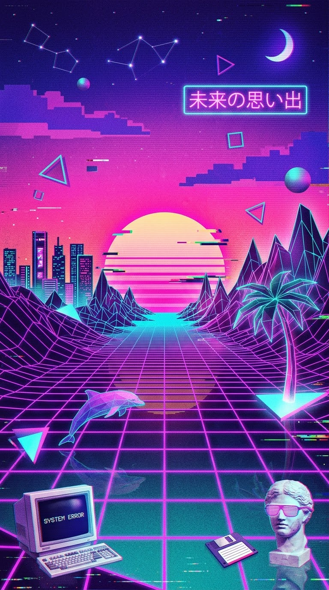
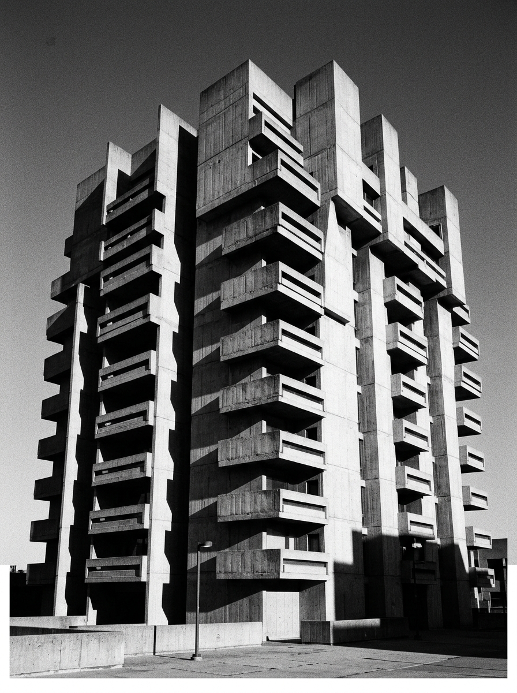
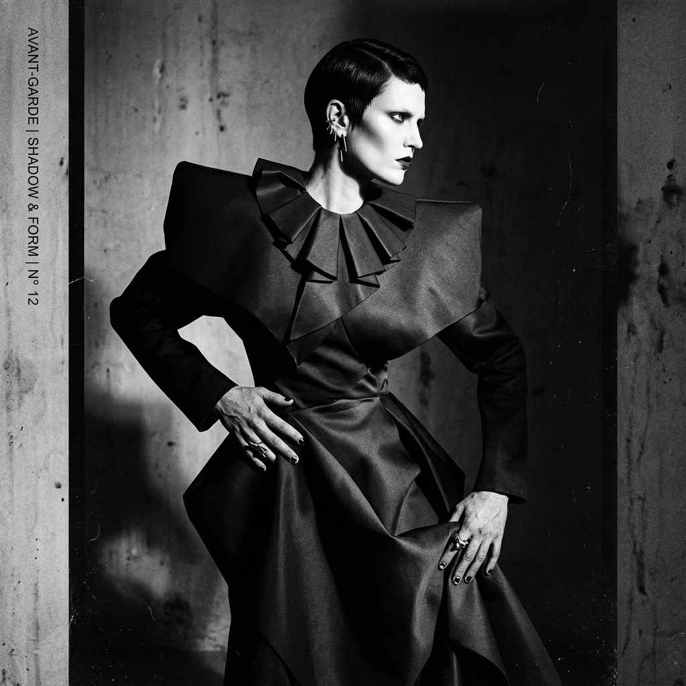

SPATIAL // 01
THREE.JS SHADER

I’m a multidisciplinary visual artist working across graphic design, photography, video editing, and visual storytelling. My work blends clean design with cinematic visuals and experimental ideas to create content that feels personal, expressive, and built to be remembered







We are currently scheduling bespoke digital identities, spatial design systems, and WebGL experiences for Q3/Q4.